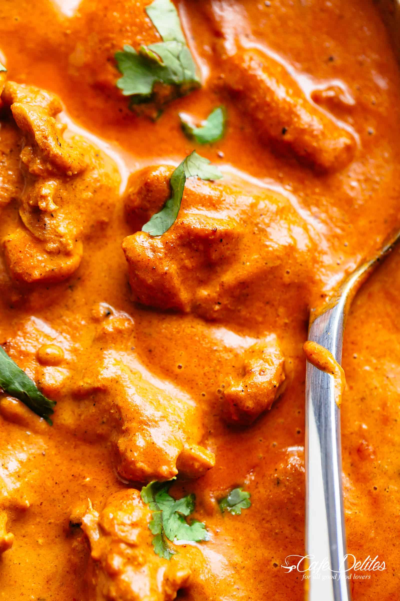

Chicken Tikka Masala

What is Chicken Tikka Masala?
Chicken Tikka Masala is creamy and easy to make right at home in one pan with simple ingredients!
Full of incredible flavours, it rivals any Indian restaurant! Aromatic golden chicken pieces in an
incredible creamy curry sauce, this Chicken Tikka Masala recipe is one of the best you will try!
Ingredients
- 28 oz (800g) boneless and skinless chicken thighs cut into bite-sized pieces
- 1 cup plain yogurt
- 1 1/2 tablespoons minced garlic
- 1 tablespoon ginger
- 2 teaspoons garam masala
- 1 teaspoon turmeric
- 1 teaspoon ground cumin
- 1 teaspoon Kashmiri chili (or 1/2 teaspoon ground red chili powder)
- 1 teaspoon of salt
- 2 tablespoons of vegetable/canola oil
- 2 tablespoons butter
- 2 small onions (or 1 large onion) finely diced
- 1 1/2 tablespoons garlic finely grated
- 1 tablespoon ginger finely grated
- 1 1/2 teaspoons garam masala
- 1 1/2 teaspoons ground cumin
- 1 teaspoon turmeric powder
- 1 teaspoon ground coriander
- 14 oz (400g) tomato puree (tomato sauce/Passata)
- 1 teaspoon Kashmiri chili (optional for colour and flavour)
- 1 teaspoon ground red chili powder (adjust to your taste preference)
- 1 teaspoon salt
- 1 1/4 cups of heavy or thickened cream (use evaporated milk for lower calories)
- 1 teaspoon brown sugar
- 1/4 cup water if needed
- 4 tablespoons Fresh cilantro or coriander to garnish
Preparation Method
- Marinate the chicken
- Toast the spicesM
- Cook the chicken
- Start making the sauce
- Finish the dish
- Rest the Chicken Tikka Masala
- Serve